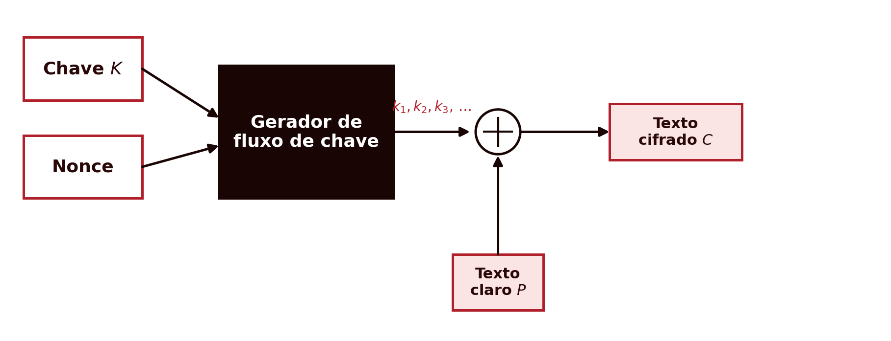
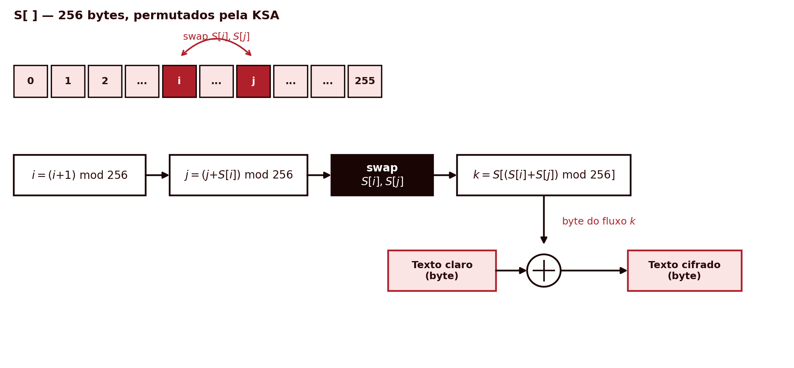
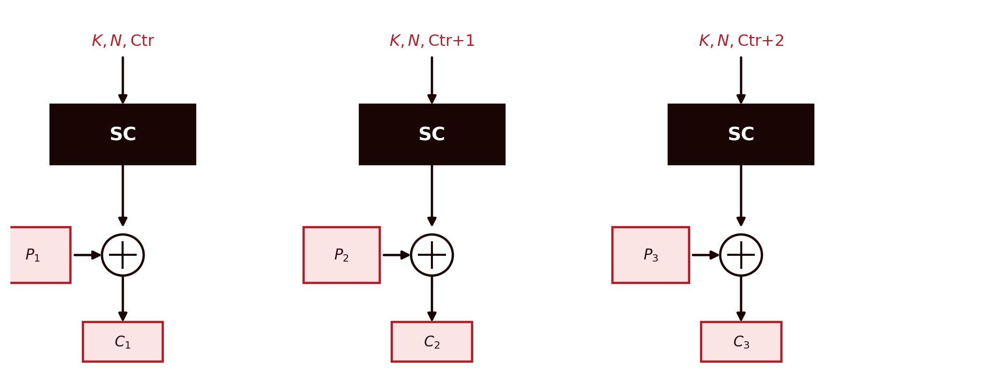
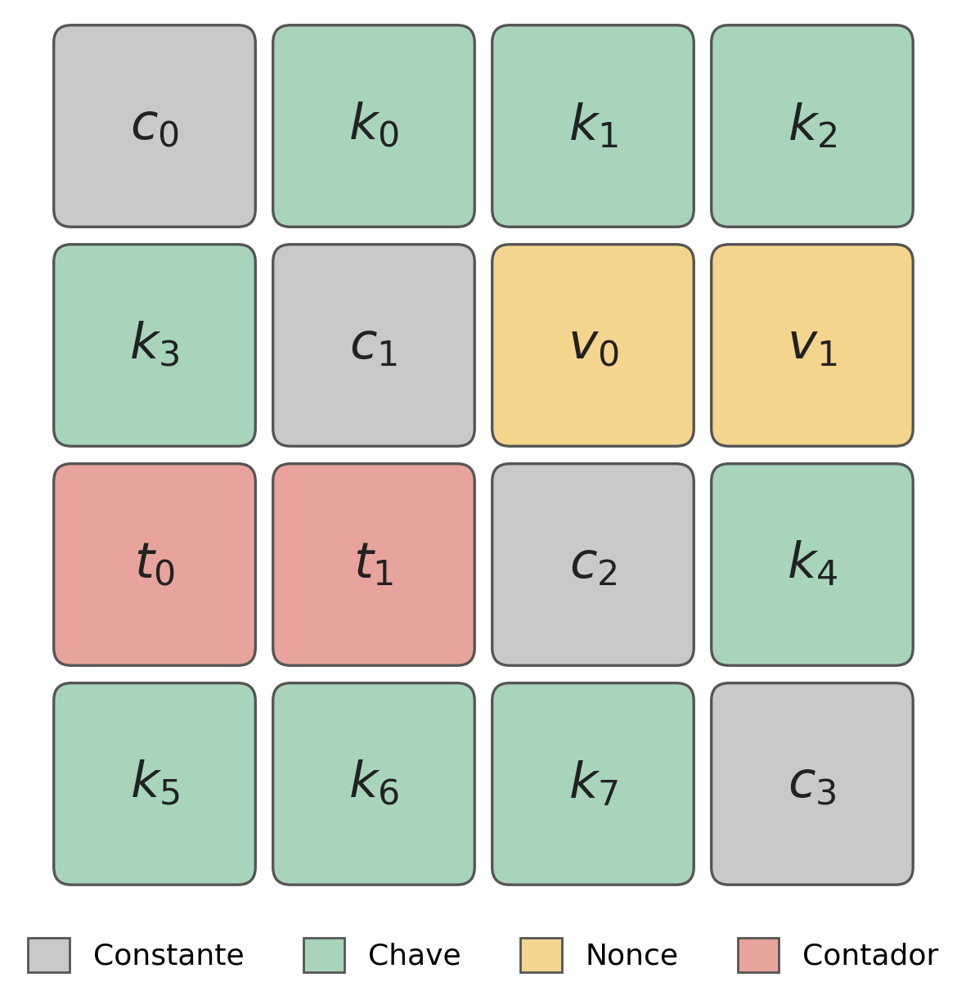
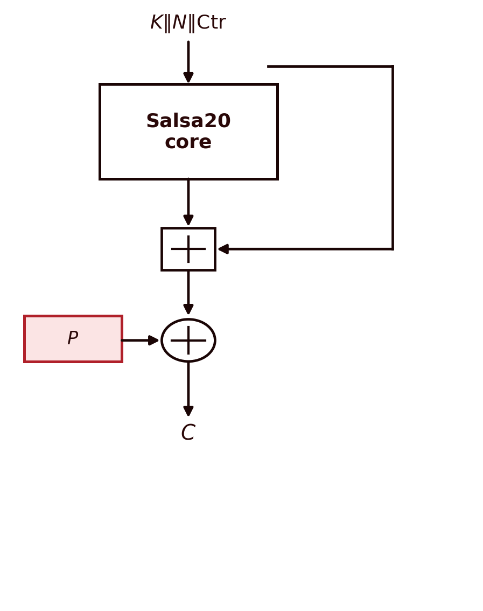
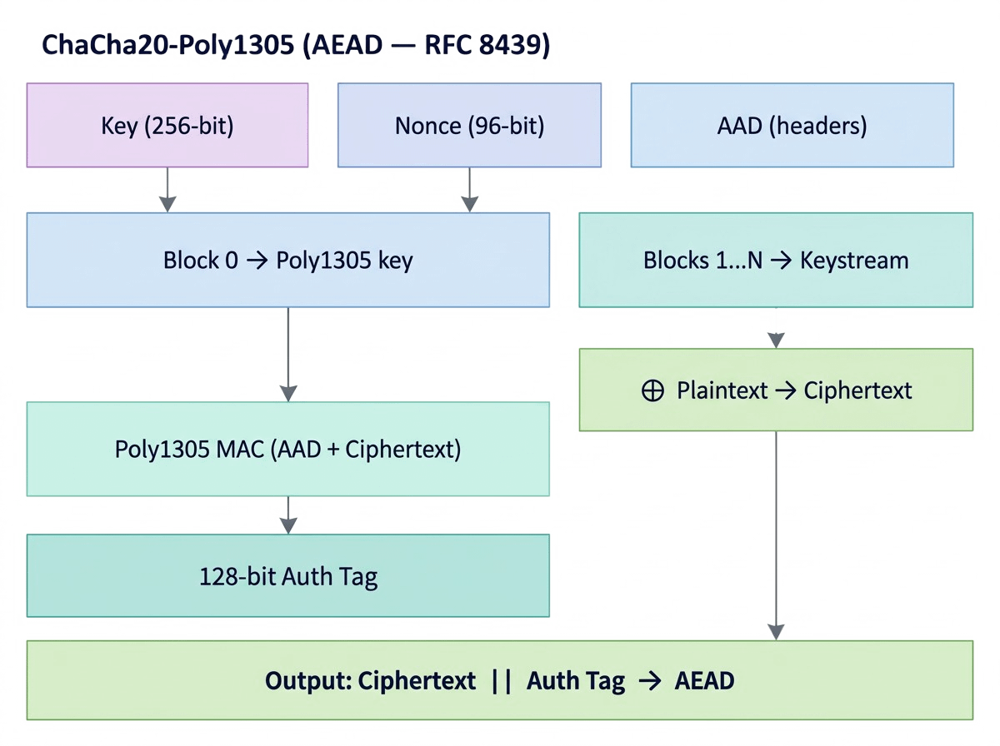

4 Cifras de Fluxo — RC4, Salsa20, ChaCha20 e Padding
Introdução
Os capítulos anteriores trataram sempre de cifras de bloco: DES e AES processam a mensagem em fragmentos de tamanho fixo, 64 ou 128 bits de cada vez, e precisaram de um modo de operação para lidar com mensagens de qualquer comprimento. Este capítulo apresenta a outra grande família de cifras simétricas, as cifras de fluxo, que dispensam essa mecânica: geram uma sequência pseudo-aleatória de bits, byte a byte, tão longa quanto a mensagem, e combinam-na com o texto claro por XOR, sem qualquer noção de bloco. As cifras de fluxo têm ganho renovada relevância nos últimos anos, precisamente por serem rápidas a processar fluxos contínuos de dados e por funcionarem bem em dispositivos com poucos recursos, como sensores sem fios ou etiquetas RFID em sistemas Internet of Things (Martin 2017). Há ainda uma segunda razão, menos técnica: o descrédito generalizado das cifras de bloco em modo CBC, precisamente por causa dos ataques de oráculo de padding já referidos no capítulo anterior, empurrou muitos sistemas modernos na direcção das cifras de fluxo (e das construções AEAD baseadas nelas) (Aumasson 2017).
4.1 Cifras de Fluxo: o Conceito Geral
O modo CTR, apresentado no capítulo anterior, já antecipava esta ideia: usar uma cifra de bloco para gerar uma sequência de valores pseudo-aleatórios, e combiná-la com o texto claro por XOR, tal como uma cifra de fluxo genuína. Uma cifra de fluxo pode ser vista como um caso particular de gerador determinístico de bits aleatórios (deterministic random bit generator, DRBG): a diferença é que um DRBG genérico só recebe um valor de entrada (uma semente), enquanto uma cifra de fluxo recebe sempre dois, a chave \(K\) (secreta, tipicamente de 128 ou 256 bits) e o nonce \(N\) (não precisa de ser secreto, mas tem de ser único para cada chave, tipicamente entre 64 e 128 bits) (Aumasson 2017). A partir destes dois valores, um gerador de fluxo de chave (keystream generator) produz uma sequência de bits \(k_1, k_2, k_3, \dots\), o fluxo de chave (keystream), tão longa quanto necessário, e a cifragem é uma simples combinação por XOR, bit a bit ou byte a byte:
\[C_i = P_i \oplus k_i\]

Esta construção devia parecer familiar: é exactamente a estrutura do One-Time Pad, já referido no capítulo 1 e retomado no capítulo 2 como o único sistema com segredo perfeito demonstrado por Shannon. Uma cifra de fluxo pode, por isso, ser vista como o equivalente pseudo-aleatório de um One-Time Pad (Martin 2017; Aumasson 2017): a diferença, e é uma diferença crucial, é que o One-Time Pad exige uma chave genuinamente aleatória, tão longa quanto a mensagem, e nunca reutilizada, enquanto uma cifra de fluxo troca essa exigência impraticável por uma chave curta e reutilizável, à custa de perder o segredo perfeito: a segurança passa a depender inteiramente da imprevisibilidade computacional do gerador, isto é, de ser inviável distinguir o seu fluxo de saída de uma sequência genuinamente aleatória sem conhecer a chave.
Esta troca tem uma consequência que não perdoa erros: o par (chave, nonce) nunca pode ser reutilizado. Note-se que isto é mais permissivo do que possa parecer à primeira vista: cifrar uma mensagem com \((K_1, N_1)\) e outra com o mesmo \(K_1\) mas um \(N_1\) diferente é seguro, tal como cifrar com um \(K_2\) diferente e o mesmo \(N_1\); o que nunca pode acontecer é voltar a cifrar com exactamente o mesmo par \((K_1, N_1)\) já usado antes (Aumasson 2017). Se isso acontecer, o gerador produz exactamente o mesmo fluxo de chave para duas mensagens diferentes. Um atacante que intercepte ambos os textos cifrados pode combiná-los por XOR entre si, e o fluxo de chave cancela-se completamente:
\[C_1 \oplus C_2 = (P_1 \oplus k) \oplus (P_2 \oplus k) = P_1 \oplus P_2\]
O resultado, o XOR dos dois textos claros, já não depende da chave, e é frequentemente suficiente para recuperar ambas as mensagens através de análise estatística da língua, tal como se fez com o método de Kasiski no capítulo 1. Este é o chamado ataque do two-time pad, e foi exactamente o tipo de falha, na reutilização de valores de inicialização, que tornou o protocolo WEP (a primeira norma de segurança Wi-Fi) praticamente inútil.
4.2 RC4
O RC4, desenhado por Ron Rivest na RSA Security em 1987, foi mantido como segredo comercial até ser divulgado, sem autorização, em 1994. Aceita chaves de comprimento variável, entre 40 e 2048 bits, e mantém um estado interno de 256 bytes (um array \(S\), com dois ponteiros auxiliares \(i\) e \(j\)). É orientado a byte (não a bit), e organiza-se em duas fases:
- KSA (Key Scheduling Algorithm): a partir da chave, constrói e permuta o array \(S\) de 256 valores (inicialmente \(S[i]=i\)), misturando-o repetidamente com os bytes da chave.
- PRGA (Pseudo-Random Generation Algorithm): a cada iteração, actualiza os dois ponteiros \(i\) e \(j\), troca \(S[i]\) com \(S[j]\), e produz um byte do fluxo de chave.

Um detalhe do desenho do RC4 vale a pena assinalar: não existe nenhum mecanismo de nonce incorporado no algoritmo — “como não acontece numa cifra de fluxo decente”, nas palavras do criptógrafo Jean-Philippe Aumasson (Aumasson 2017). Qualquer nonce tem de ser adicionado externamente, por quem implementa o protocolo, e foi precisamente aqui que o WEP falhou: prefixava a chave com um nonce curto e previsível antes de cada KSA, tornando o sistema vulnerável ao ataque de Fluhrer, Mantin e Shamir (2001) (Fluhrer, Mantin, e Shamir 2001), que explora o facto de os primeiros bytes do fluxo de chave do RC4 não serem estatisticamente uniformes. O caso mais conhecido: o segundo byte do fluxo de chave vale zero com uma probabilidade de \(1/128\), o dobro do que seria de esperar (\(1/256\)) num byte verdadeiramente aleatório (Aumasson 2017) — um desvio pequeno, mas suficiente para, com milhões de mensagens interceptadas, distinguir estatisticamente o RC4 de uma fonte aleatória e, em certas condições, recuperar bytes do texto claro sem nunca descobrir a chave. A mitigação proposta, descartar os primeiros 3072 bytes do fluxo antes de o usar (RC4-drop3072), reduz mas não elimina o problema. Um segundo ataque prático, contra o próprio TLS, foi publicado em 2013 (AlFardan et al. 2013). Confrontado com estas fragilidades acumuladas, o RC4 foi formalmente banido do TLS pela Internet Engineering Task Force em 2015 (Popov 2015), e não deve ser usado em nenhum sistema novo.
4.3 Duas Arquitecturas: Stateful vs. por Contador
Antes de avançar para o Salsa20 e o ChaCha20, vale a pena situar o RC4 numa classificação mais geral. As cifras de fluxo organizam-se em duas grandes arquitecturas, consoante a forma como produzem o fluxo de chave (Aumasson 2017).
Uma cifra de fluxo com estado (stateful) inicializa um estado interno a partir da chave e do nonce (a fase Init), e depois vai actualizando esse estado a cada novo bloco do fluxo de chave (a fase Update, repetida), de forma sequencial: cada actualização depende da anterior. O RC4, já apresentado, é exactamente disto: a KSA inicializa o array \(S\), e cada iteração da PRGA actualiza \(S\) antes de produzir o byte seguinte do fluxo.

Uma cifra de fluxo por contador (counter-based) segue uma lógica diferente: não mantém nenhum estado secreto entre blocos, para além do valor de um contador público. Cada bloco do fluxo de chave calcula-se de novo, directamente a partir da chave, do nonce e do valor do contador nesse bloco — sem depender do resultado do bloco anterior.

Esta diferença arquitectural tem uma consequência prática directa, já referida a propósito do modo CTR no capítulo anterior: como cada bloco de uma cifra por contador é independente dos restantes, pode calcular-se em paralelo, ao contrário de uma cifra com estado, em que cada actualização tem de esperar pela anterior. O Salsa20 e o ChaCha20, apresentados de seguida, seguem exactamente esta segunda arquitectura.
4.4 Salsa20
Em resposta às fragilidades do RC4, Daniel J. Bernstein desenhou o Salsa20 em 2005, submetido ao concurso eSTREAM (o projecto europeu ECRYPT para cifras de fluxo), onde foi seleccionado para o portefólio final de algoritmos recomendados para software.
Ao contrário do RC4, o Salsa20 não mantém um estado que evolui byte a byte, nem usa S-boxes ou tabelas de substituição. Baseia-se exclusivamente em três operações, soma, rotação de bits e XOR — por isso chamada uma construção ARX (Add-Rotate-XOR). O seu estado interno é uma matriz \(4\times4\) de palavras de 32 bits (512 bits, 64 bytes no total), organizada em quatro grupos: quatro constantes fixas (\(c_0\)–\(c_3\)), a chave de 128 ou 256 bits, dividida em oito palavras (\(k_0\)–\(k_7\)), o nonce de 64 bits, em duas palavras (\(v_0\), \(v_1\)), e um contador de 64 bits, também em duas palavras (\(t_0\), \(t_1\)):

As quatro constantes (\(c_0,c_1,c_2,c_3\)) não fazem parte da chave nem do nonce: são valores fixos, iguais para todas as execuções do algoritmo (a constante ASCII expand 32-byte k, repartida pelas quatro palavras), e a sua função é puramente estrutural, garantir que o estado inicial nunca é todo ele previsível a partir apenas de chave e nonce, mesmo antes de qualquer ronda ser aplicada. Para gerar cada bloco de 64 bytes de fluxo de chave, aplicam-se 20 rondas de uma função de quarto de ronda, \(Q_R(a,b,c,d)\) (10 sobre as linhas e 10 sobre as colunas):
\[b \mathrel{\oplus}= (a+d) \lll 7 \qquad c \mathrel{\oplus}= (b+a) \lll 9\] \[d \mathrel{\oplus}= (c+b) \lll 13 \qquad a \mathrel{\oplus}= (d+c) \lll 18\]
e o resultado final soma-se (módulo \(2^{32}\), palavra a palavra) ao estado inicial.

Repare-se na distinção entre as duas operações da figura: a soma final ao estado inicial (quadrado) é adição modular, não XOR, e é precisamente o que torna a transformação impossível de inverter sem conhecer a chave. Porquê, porque a soma binária modular não é uma operação linear. Ora, se o Salsa20 devolvesse directamente a permutação do núcleo, sem esta soma, seria trivialmente invertível. Só depois desta soma é que o resultado se combina por XOR (círculo) com o texto claro.
Como cada bloco de 64 bytes é gerado de forma independente dos restantes (a partir da chave, do nonce e do valor do contador nesse bloco), o Salsa20 é inteiramente paralelizável, tanto na cifragem como na decifragem.
O melhor ataque conhecido contra o Salsa20 reduz-se a 15 das 20 rondas (Aumasson 2017); a versão completa, de 20 rondas, não tem, até hoje, nenhum ataque prático conhecido, e é considerada segura.
4.5 ChaCha20
O ChaCha20, também desenhado por Bernstein, em 2008, é uma variante do Salsa20 com uma função de quarto de ronda modificada, que alcança melhor difusão por ronda: cada palavra de 32 bits participa tanto numa soma como numa rotação em cada um dos quatro passos, o que faz o efeito de cada bit espalhar-se mais depressa pelo resto do estado. É hoje a cifra de fluxo de referência, usada, entre outros, no TLS 1.3, no QUIC, no WireGuard, no SSH e por omissão no OpenSSH desde 2014.
\[a \mathrel{+}= b;\ d \mathrel{\oplus}= a;\ d \lll 16 \qquad c \mathrel{+}= d;\ b \mathrel{\oplus}= c;\ b \lll 12\] \[a \mathrel{+}= b;\ d \mathrel{\oplus}= a;\ d \lll 8 \qquad c \mathrel{+}= d;\ b \mathrel{\oplus}= c;\ b \lll 7\]
As constantes de rotação (16, 12, 8, 7) e a ordem das operações são diferentes das do Salsa20 (7, 9, 13, 18), precisamente para conseguir essa difusão mais rápida. Em relação ao Salsa20, o ChaCha20 normalizado pelo IETF usa ainda um nonce maior, de 96 bits (em vez de 64), e um contador mais pequeno, de 32 bits — suficiente para gerar até 256 GB de fluxo de chave a partir de um único nonce.
O ChaCha20 é frequentemente combinado com um mecanismo de autenticação de mensagem, o Poly1305, na construção ChaCha20-Poly1305, normalizada no RFC 8439 (Nir e Langley 2018).
O Poly1305 (Bernstein 2005) não cifra nada: o seu único trabalho é calcular uma marca de autenticação (tag) de 128 bits sobre o texto cifrado e sobre eventuais dados associados não cifrados (additional authenticated data, AAD, como cabeçalhos de rede), que o receptor usa para confirmar que nada foi alterado.
A particularidade mais importante do Poly1305, mesmo sem entrar em detalhe sobre o mecanismo interno, é que a sua chave só pode ser usada uma única vez, para uma única mensagem — é um autenticador de utilização única (one-time authenticator), tal como uma cifra de fluxo nunca pode reutilizar o par (chave, nonce). Reutilizar a mesma chave do Poly1305 em duas mensagens permite a um atacante falsificar marcas futuras sob essa chave. É exactamente esta exigência que a construção ChaCha20-Poly1305 resolve: o primeiro bloco gerado pelo ChaCha20 (bloco 0) deriva uma chave de Poly1305 nova a partir da chave e do nonce dessa mensagem, garantindo automaticamente uma chave descartável por mensagem, mesmo que a chave do ChaCha20 seja reutilizada em muitas mensagens sucessivas. Os blocos seguintes do ChaCha20 (1 a \(N\)) fornecem o fluxo de chave que cifra a mensagem por XOR, e só depois o Poly1305 entra em acção, calculando a marca sobre o resultado.
Por ser apenas multiplicação e redução modular, sem S-boxes nem rondas de cifra, o Poly1305 é extremamente rápido mesmo em software puro, sem hardware dedicado — ao contrário do AES-GCM, que tipicamente depende de instruções como o AES-NI para atingir bom desempenho. Foi esta vantagem que levou a Google a promover o ChaCha20-Poly1305 no TLS antes de o AES-NI se ter tornado universal em dispositivos móveis.

Esta é uma cifra autenticada (AEAD, Authenticated Encryption with Associated Data), o mesmo conceito já introduzido a propósito do modo GCM no capítulo anterior: garante simultaneamente confidencialidade e integridade, numa única construção. O ChaCha20, tal como o Salsa20, não tem, até hoje, nenhuma fragilidade estatística conhecida que o torne distinguível de uma fonte aleatória.
4.6 Síntese do Capítulo
Este capítulo apresentou a segunda grande família de cifras simétricas:
- Uma cifra de fluxo gera um fluxo de chave pseudo-aleatório, combinado com o texto claro por XOR, byte a byte, sem noção de bloco — o equivalente pseudo-aleatório do One-Time Pad
- Nunca reutilizar o mesmo par (chave, nonce): fazê-lo permite o ataque do two-time pad, que cancela o fluxo de chave e expõe o XOR dos dois textos claros
- O RC4, sem nonce incorporado e com um fluxo de chave estatisticamente enviesado nos primeiros bytes, acumulou fragilidades (Fluhrer–Mantin–Shamir, 2001; AlFardan et al., 2013) que o tornaram inseguro, e está hoje banido de normas como o TLS
- O Salsa20 e o ChaCha20, construções ARX (soma, rotação, XOR) desenhadas por Bernstein, não têm fragilidades práticas conhecidas; o ChaCha20, com melhor difusão por ronda, é hoje a cifra de fluxo de referência, frequentemente usada em conjunto com o Poly1305 numa construção AEAD
4.7 Para Pensar
O RC4 não tem nenhum mecanismo de nonce incorporado; o ChaCha20 exige um nonce de 96 bits para cada mensagem. Tendo em conta o ataque do two-time pad apresentado neste capítulo, que consequência prática tem esta diferença de desenho para quem implementa um protocolo de comunicação com qualquer uma destas duas cifras?